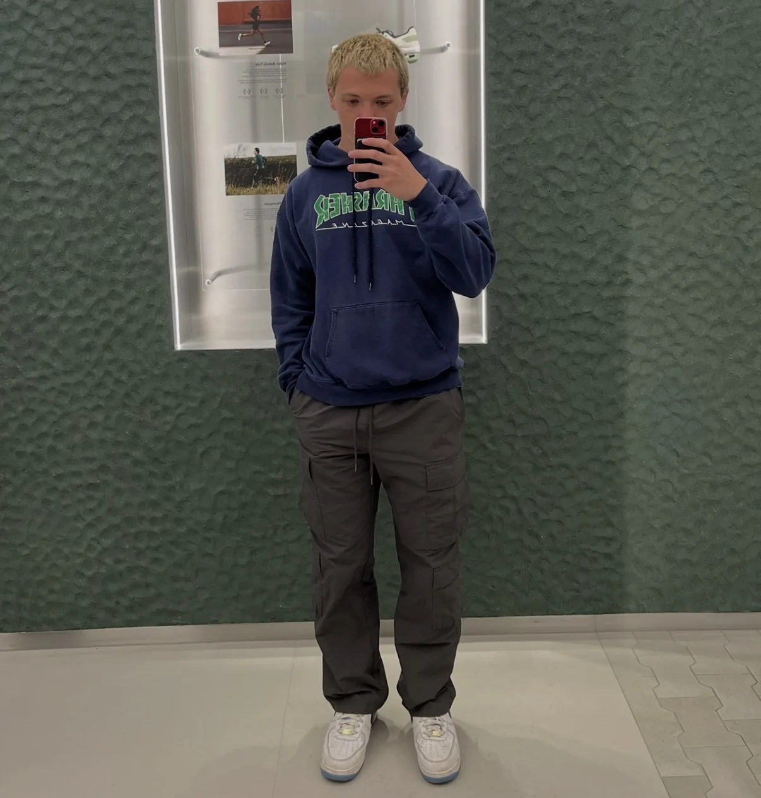
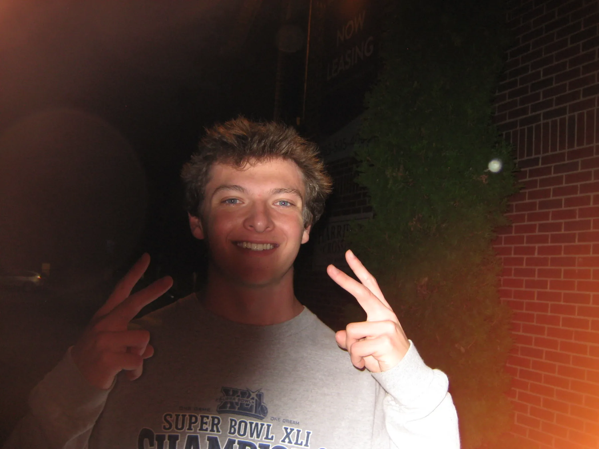
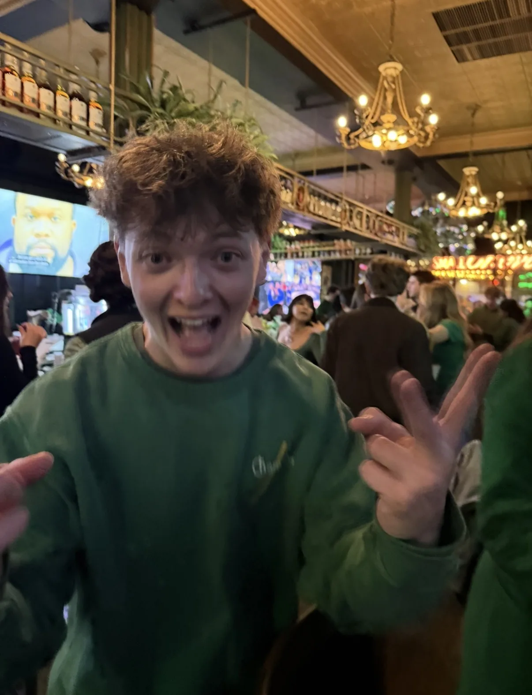

London, 2023
Most of my work is about reducing friction people don’t realize they’re dealing with.
About
I’m a Consultant at Walker, based in St. Pete, Florida, focused on turning complex systems into tools people can actually use.
In my current role, I work directly with clients to design and launch survey programs, build dashboards, and work with large datasets in Qualtrics. A lot of my work sits between UX and implementation. I’m not just designing interfaces, I’m configuring systems, cleaning data, and figuring out what actually works once something goes live.
I’ve worked on projects ranging from a few hundred responses to datasets with over a million, with dashboards used by hundreds of stakeholders. That scale has pushed me to think less about ideal experiences and more about clarity, performance, and real-world use.
Before Walker, I was a UX design intern at Wisq and GravityDrive, and a user experience researcher with Open Lab at Newcastle University. These days I’m also building Pocket Gallery, an iOS app that puts a new piece of art on your Home Screen each day.
I studied UX Design at Purdue University, where I built a foundation in research, interaction design, and prototyping. More importantly, it shaped how I approach problems. Start with what people are trying to do, simplify where things get messy, and build something that feels obvious once it’s in front of you.

West Lafayette, 2024
Outside of work
I figured this page should actually be about me, so this is the part where you get a better sense of who I am outside of work.
I spend a lot of my time working out, playing Pokemon Go more than I probably should, watching Purdue basketball, the Broncos, and the Pacers, and I play pickup basketball and golf with friends whenever I can.
I go to the movie theater a lot, so if you want to talk movies lmk. I'm also pretty into cooking, so I'm always trying new recipes. And for no real reason other than it feels important to mention, my favorite candy is Buncha Crunch. If you've never had it, you should try it.

Chicago, 2026
How I think about design
I treat design as a way to reduce decisions, not add more.
Before I think about screens, I try to understand the system. What someone is actually trying to do, what information they’re relying on, and where things start to break down. Most problems aren’t visual, they’re structural.
From there, the goal is simple. Make the next step obvious. Cut anything that slows someone down. Use the interface to guide, not just display.
I’m less interested in making something look good than making it feel clear and easy to use. When something works, people don’t have to think about it. They just move through it.